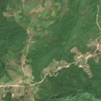
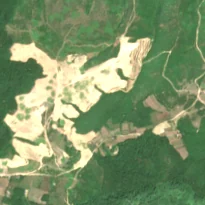

43,2 ha de pădure schimbată lângă Șerani
Între vara lui 2025 și 5 mai 2026, pe aproximativ 43,2 ha de pădure din comuna Valcău de Jos, lângă Șerani, județul Sălaj, imaginile Sentinel-2 arată că vegetația a dispărut sau s-a schimbat puternic. În registrul public există o autorizație de tăiere pentru acest loc.
Autorizația de tăiere
cu autorizație
Parcela autorizată acoperă zona, iar autorizația era valabilă când s-a tăiat.


Înainte și după: Copernicus Sentinel-2, 10 m pe pixel, conturul zonei cu portocaliu. Poza detaliată (Esri World Imagery) e de acum 1–4 ani: arată ce era acolo înainte, nu tăierea.
Pe scurt
- Identificator
- 20260505_47059_22693
- Locul
- Șerani, comuna Valcău de Jos, județul Sălaj (SIRUTA 142952)
- Coordonate (centru)
- 47.05929, 22.69299 · Google Maps · OpenStreetMap
- Suprafața
- 43,2 ha (din pixeli de 10 m; ± câțiva pixeli pe margine)
- Pădurea întreagă
- în vara lui 2025 (de atunci, nori sau iarnă)
- Prima imagine cu schimbarea
- 5 mai 2026
- Imagini în care se vede schimbarea
- 4
- Cât de sigur e semnalul din satelit
- medie
- Autorizația cea mai apropiată
- APV 2500259506960 · Ocolul Silvic Blidaru, valabilă 16 decembrie 2025 – 28 februarie 2026, la 0 m de zonă
- Terenul
- în afara amenajamentelor silvice publicate (pășune, mal de apă sau pădure privată fără amenajament în registru)
- Arie protejată
- Muntele Șes
- Garda Forestieră
- Oradea
Dacă vrei să verifici sau să sesizezi
- Pădurile din județul Sălaj sunt în grija Gărzii Forestiere Oradea, care controlează tăierile și dă amenzile.
- Autorizația găsită în zonă e emisă de Ocolul Silvic Blidaru.
- Formularul Gărzii Forestiere Naționale primește sesizări și fără nume. Trimite linkul acestei pagini, coordonatele și pozele. Dacă tăierea e în desfășurare, sună la 112.
- Autorizațiile și transporturile de lemn se pot căuta în Inspectorul Pădurii.
Pagina arată ce se vede din satelit și ce scrie în registrul public; nu e o dovadă în sine.
Cum citezi zona
Linkul acestei pagini nu se schimbă. Dacă zona iese vreodată de pe hartă, pagina rămâne, cu data și cu ce știam despre ea.
Pădurea RO, zona 20260505_47059_22693: 43,2 ha, Șerani, comuna Valcău de Jos, județul Sălaj; schimbare văzută din satelit între vara lui 2025 și 5 mai 2026. https://iliemihai.github.io/padurea-ro/zona/20260505_47059_22693/ (consultat la [data]). Date: CC BY 4.0.
Datele zonei: GeoJSON · toate zonele: date deschise · licența CC BY 4.0.
Istoricul zonei pe hartă
Starea se poate schimba când registrul publică o autorizație sau când analistul vede poze mai bune. O ținem aici, ca un link citat să arate și ce spuneam atunci.
Pe hartă cel târziu din 5 noiembrie 2026.
- 5 noiembrie 2026 – azi · cu autorizație
Detalii tehnice, pentru verificare
De ce acest nivel de încredere:
- văzută schimbată în 4 imagini diferite
- peste 3 ha
- ultima dată am văzut-o intactă în vara lui 2025 (de atunci, nori sau zăpadă)
- AI-ul vede pădure dispărută
- Placa Sentinel-2
- 34TFT
- NDVI de referință
- 0.88
- NBR de referință
- 0.65
- Scăderea în pădurea din jur
- 0.06
- Persistență
- 0.99
- NDVI / NBR după
- 0.227 / 0.088
- Analistul de zi (model)
- taiere · 0.93 · claude-haiku-5-5
Cum se calculează fiecare: metodologia.
Pune harta zonei într-un articol
Copiază codul în articol (merge în majoritatea site-urilor de știri). Sau pune doar linkul: WhatsApp, Facebook și X arată singure poza zonei.